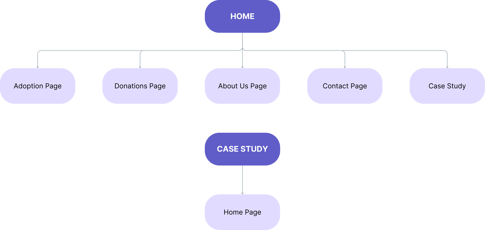

<!DOCTYPE html>
<html lang="en">
  <head>
    <meta charset="UTF-8" />
    <meta name="author" content="Yashar Javdani" />
    <meta name="viewport" content="width=device-width, initial-scale=1.0" />
    <title>Mao</title>
    <link rel="stylesheet" href="css/report.css" />
    <link rel="preconnect" href="https://fonts.googleapis.com" />
    <link rel="preconnect" href="https://fonts.gstatic.com" crossorigin />
    <link
      href="https://fonts.googleapis.com/css2?family=Roboto:ital,wght@0,100;0,300;0,400;0,500;0,700;0,900;1,100;1,300;1,400;1,500;1,700;1,900&display=swap"
      rel="stylesheet" />
  </head>
</html>
<body>
  <header>
    <h1 class="report-title">Case Study</h1>
    <p class="report-text">Mao - Cat Shelter Website</p>
    <a href="index.html">Back Home</a>
  </header>
  <section class="report-section">
    <h2 class="report-section-title">Introduction</h2>
    <p class="report-text">
      The focus of the website is helping stray cats that are in need of
      shelter, food, or treatment, providing them with the needed care and
      attention, and then finding caring families for them that want to adopt
      them. The story told by the website refers to a charity organization that
      started in 2017 and in time grew with the help of caring people who adopt
      and donate.
    </p>
    <p class="report-text">
      The structure I chose for the website is the tree structure, where each
      page can be called from the other pages.
    </p>
  </section>
  <section class="report-section">
    <h2 class="report-section-title">Inspiration</h2>
    <p class="report-text">
      What inspired me to build the website around this theme was, first of all,
      the many channels on YouTube that rescue starving or sick cats from the
      street and show the whole process of making them better. Seeing how they
      look so well and happy after being rescued from the streets was my main
      inspiration. An example of such a channel is
      <a href="https://www.youtube.com/@MeowWoofHome"><i>Meow Woof Home</i></a
      >. They rescue stray animals that are in very bad or even shocking
      conditions, and each time I see one of their videos, I am surprised at the
      end of how much better the rescued animal looks. The patience and care
      they put into this is an inspiration.
    </p>
    <p class="report-text">
      A second inspiration source for me was a local animal shelter in the city
      I am currently living in,
      <a href="https://www.tierquartier.at/"><i>TierQuarTier</i></a
      >. I discovered their organization while I was looking to adopt a cat.
      They don't rescue only cats but also dogs and other small animals. The
      adoption process is also carefully done, for example by making sure that
      the future owner's house is prepared for having a cat (e.g., having cat
      nets on the windows). Also, if more cats were rescued together and they
      got used to living with each other, the shelter would give these cats for
      adoption only together to prevent them from the stress of being taken away
      from their family.
    </p>
    <p class="report-text">
      My third inspiration comes from my personal experiences with stray cats.
      Being a child, I lived in a city with many stray cats. Sometimes, the
      local people would take care of the cats around their neighborhood, giving
      them food or taking them to the veterinarian when they needed medical
      attention. These actions showed me that every small effort can make
      society better. During my childhood, my family also adopted a few cats,
      one of them being a stray kitten lost from his parents.
    </p>
  </section>
  <section class="report-section">
    <h2 class="report-section-title">Accessibility</h2>
    <p class="report-text">
      While building the website, I thought about ways to make it more
      accessible.
    </p>
    <p class="report-text">
      The first example of accessibility is the color contrast, which takes into
      account persons who have limited eyesight. I checked the contrast ratio
      between the body's gradient colours and the text colour for both dark and
      light themes. In order to make sure the contrast ratio is good, I used
      <a href="https://www.siegemedia.com/contrast-ratio">this</a> website for
      checking.
    </p>
    <p class="report-text">
      The second example is using descriptive alt text on images for people who
      use screen readers or other software that can read the image's alt text.
      Also, I labeled each contact form input to make it readable by software
      that reads HTML elements. This was done in order to make sure that people
      with complete vision loss can better understand the site structure and
      information. Concerning this, I've also added a message in the contact
      form that confirms when the form data was successfully sent.
    </p>
    <p class="report-text">
      A third way in which the website is accessible is having an
      easy-to-understand navigation.
    </p>
  </section>
  <section class="report-section">
    <h2 class="report-section-title">Usability</h2>
    <p class="report-text">
      I also took into consideration the website's usability while working on
      this website. An example is that the website is completely responsive on
      all types of screens for all device categories (phone, tablet, computer
      screen). All the elements included in the website are styled to fit
      different screens. The text also has different sizes for different
      devices.
    </p>
    <p class="report-text">
      Another example concerns the information contained in the website pages.
      By including visual or text elements to separate different types of
      information, I made sure that everything is easy to understand and that
      all the information on the website is found easily.
    </p>
    <p class="report-text">
      A third way that I believe improves the website's usability is including a
      dark theme. From my experience, this is very useful when the person is in
      a dark room, or outside at night. This not only helps the user of the
      website, by making the page more pleasant to look at in a dark
      environment, but it also prevents the people around the user from getting
      annoyed by the light coming from the user's screen.
    </p>
  </section>
  <section class="report-section">
    <h2 class="report-section-title">Appendices</h2>
    <div class="report-subsection">
      <h3 class="report-section-subtitle">Site Map</h3>
      
    </div>
    <div class="report-subsection">
      <h3 class="report-section-subtitle">Wireframes</h3>
      <ul>
        <li>
          <p class="list-title">Home page wireframes</p>
          <a
            href="assets/reportImages/wireframes/Home_big_screen.png"
            target="_blank"
            class="image-link">
            Home Page - Big Screen wireframe
          </a>
          <a
            href="assets/reportImages/wireframes/Home_small_screen.png"
            target="_blank"
            class="image-link">
            Home Page - Small Screen wireframe
          </a>
        </li>
        <li>
          <p class="list-title">Adoption page wireframes</p>
          <a
            href="assets/reportImages/wireframes/Adopt_big_screen.png"
            target="_blank"
            class="image-link">
            Adoption Page - Big Screen wireframe
          </a>
          <a
            href="assets/reportImages/wireframes/Adopt_small_screen.png"
            target="_blank"
            class="image-link">
            Adoption Page - Small Screen wireframe
          </a>
        </li>
        <li>
          <p class="list-title">Donations page wireframes</p>
          <a
            href="assets/reportImages/wireframes/Donations_big_screen.png"
            target="_blank"
            class="image-link">
            Donations Page - Big Screen wireframe
          </a>
          <a
            href="assets/reportImages/wireframes/Donations_small_screen.png"
            target="_blank"
            class="image-link">
            Donations Page - Small Screen wireframe
          </a>
        </li>
        <li>
          <p class="list-title">About Us page wireframes</p>
          <a
            href="assets/reportImages/wireframes/AboutUs_big_screen.png"
            target="_blank"
            class="image-link">
            About Us Page - Big Screen wireframe
          </a>
          <a
            href="assets/reportImages/wireframes/AboutUs_small_screen.png"
            target="_blank"
            class="image-link">
            About Us Page - Small Screen wireframe
          </a>
        </li>
        <li>
          <p class="list-title">Contact page wireframes</p>
          <a
            href="assets/reportImages/wireframes/Contact_big_screen.png"
            target="_blank"
            class="image-link">
            Contact Page - Big Screen wireframe
          </a>
          <a
            href="assets/reportImages/wireframes/Contact_small_screen.png"
            target="_blank"
            class="image-link">
            Contact Page - Small Screen wireframe
          </a>
        </li>
      </ul>
    </div>
    <div class="report-subsection">
      <h3 class="report-section-subtitle">Mock-Ups</h3>
      <ul>
        <li>
          <p class="list-title">Home page mock-ups</p>
          <a
            href="assets/reportImages/mockups/home_big_screen.png"
            target="_blank"
            class="image-link">
            Home Page - Big Screen mock-up
          </a>
          <a
            href="assets/reportImages/mockups/home_medium_screen.png"
            target="_blank"
            class="image-link">
            Home Page - Medium Screen mock-up
          </a>
          <a
            href="assets/reportImages/mockups/home_small_screen.png"
            target="_blank"
            class="image-link">
            Home Page - Small Screen mock-up
          </a>
        </li>
        <li>
          <p class="list-title">Adoption page mock-ups</p>
          <a
            href="assets/reportImages/mockups/adopt_big_screen.png"
            target="_blank"
            class="image-link">
            Adoption Page - Big Screen mock-up
          </a>
          <a
            href="assets/reportImages/mockups/adopt_medium_screen.png"
            target="_blank"
            class="image-link">
            Adoption Page - Medium Screen mock-up
          </a>
          <a
            href="assets/reportImages/mockups/adopt_small_screen.png"
            target="_blank"
            class="image-link">
            Adoption Page - Small Screen mock-up
          </a>
        </li>
        <li>
          <p class="list-title">Donations page mock-ups</p>
          <a
            href="assets/reportImages/mockups/donations_big_screen.png"
            target="_blank"
            class="image-link">
            Donations Page - Big Screen mock-up
          </a>
          <a
            href="assets/reportImages/mockups/doantions_medium_screen.png"
            target="_blank"
            class="image-link">
            Donations Page - Medium Screen mock-up
          </a>
          <a
            href="assets/reportImages/mockups/donations_small_screen.png"
            target="_blank"
            class="image-link">
            Donations Page - Small Screen mock-up
          </a>
        </li>
        <li>
          <p class="list-title">About Us page mock-ups</p>
          <a
            href="assets/reportImages/mockups/aboutUs_big_screen.png"
            target="_blank"
            class="image-link">
            About Us Page - Big Screen mock-up
          </a>
          <a
            href="assets/reportImages/mockups/aboutUs_medium_screen.png"
            target="_blank"
            class="image-link">
            About Us Page - Medium Screen mock-up
          </a>
          <a
            href="assets/reportImages/mockups/aboutUs_small_screen.png"
            target="_blank"
            class="image-link">
            About Us Page - Small Screen mock-up
          </a>
        </li>
        <li>
          <p class="list-title">Contact page mock-ups</p>
          <a
            href="assets/reportImages/mockups/contact_big_screen.png"
            target="_blank"
            class="image-link">
            Contact Page - Big Screen mock-up
          </a>
          <a
            href="assets/reportImages/mockups/contact_medium_screen.png"
            target="_blank"
            class="image-link">
            Contact Page - Medium Screen mock-up
          </a>
          <a
            href="assets/reportImages/mockups/contact_small_screen.png"
            target="_blank"
            class="image-link">
            Contact Page - Small Screen mock-up
          </a>
        </li>
      </ul>
    </div>
  </section>
  <section class="report-section">
    <h2 class="report-section-title">Resources</h2>
    <p class="report-text">
      While creating the website I used various resources that were needed. A
      good example is the Visual Studio Code editor. This allowed me to install
      various useful plugins like the Live Server extension in order to be able
      to open the website in a browser. Also, the Prettier code formatter
      extension that is included in VSCode helped me keep the code clean and
      well-structured.
    </p>
    <p class="report-text">
      I've also used resources that helped me with the content on the website.
      One such resource is
      <a href="https://iconscout.com/unicons/free-line-icons">Iconscout</a>,
      which provides free icons to use inside the HTML code. Also, to get custom
      fonts I've used the Google fonts website, which allowed me to include the
      Roboto font with all the font weights and styles.
    </p>
    <p class="report-text">
      Another example in this category is the various images and videos included
      in the website. All of these are free media taken from the following
      websites: <a href="https://unsplash.com">Unsplash</a>,
      <a href="https://undraw.co/">unDraw</a> for the illustrations,
      <a href="https://www.pexels.com">Pexels</a>, and
      <a href="https://pixabay.com/">Pixabay</a>. Also, the text found in the
      About Us page is partially created with the help of the free
      <a href="https://deepai.org/chat/text-generator">DeepAI</a> tool.
    </p>
    <p class="report-text">
      In the case of the code, it is written with vanilla CSS, HTML and
      JavaScript.
    </p>
    <p class="report-text">
      For the wireframes and site map, I used the
      <a href="https://app.diagrams.net/">DrawIo</a> tool, since it allowed me
      to create cleaner wireframes.
    </p>
  </section>
</body>
